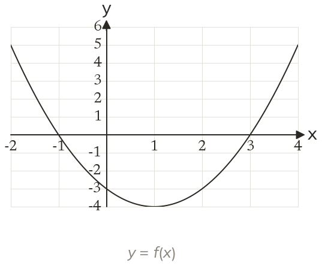

Westonbirt Maths · Functions and Graph Transformations
Reading Functions from Graphs
Name: ______________________ Date: ____________
1
Use the graph of to find and
2
Use the graph to solve
3
Use the graph to solve
4
How many solutions has ?
5
Use the graph to find the range of f for
Ext
For which values of does have two solutions for ?
